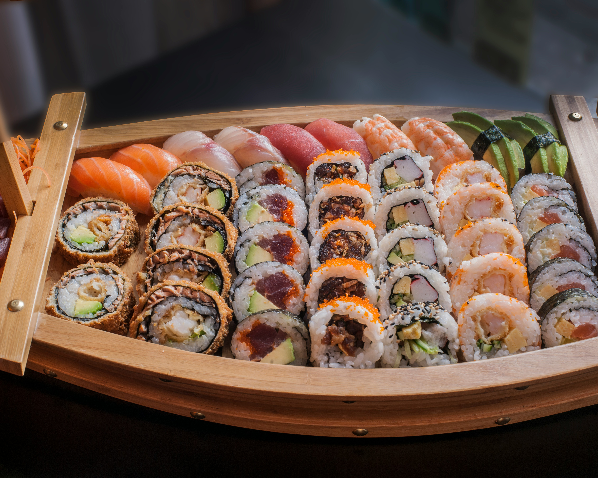

All About Sushi

Sushi is more than just a delicious meal, it's an experience! Made with ingredients like fresh fish, seafood, vegetables, seaweed, and vinegared rice, sushi offers a variety of flavors and textures that can suit almost any taste. Popular types include Nigiri (fish on rice), Maki (rolled sushi), and Sashimi (thinly sliced fish). Not only is sushi tasty, but it can also provide health benefits thanks to its protein-rich fish, nutrient-packed vegetables, and heart-healthy omega-3 fatty acids.
When eating sushi, it's common to use chopsticks, lightly dip it in soy sauce for extra flavor, add a touch of wasabi for a spicy kick, and enjoy pickled ginger between bites to cleanse your palate. Whether you're a sushi lover or trying it for the first time, every roll is an exciting adventure for your taste buds!